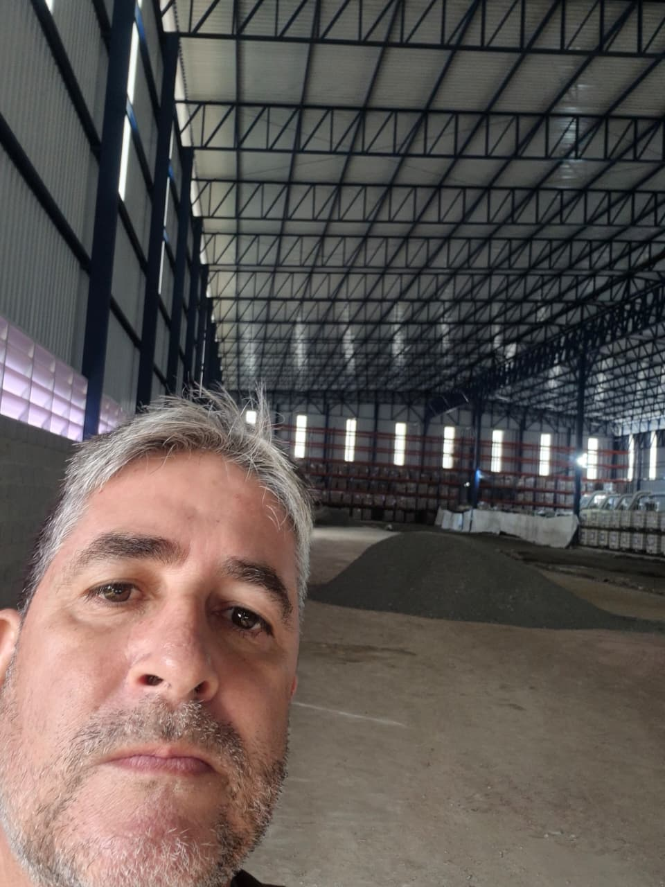
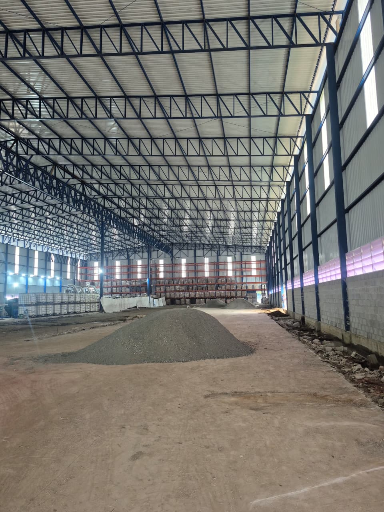
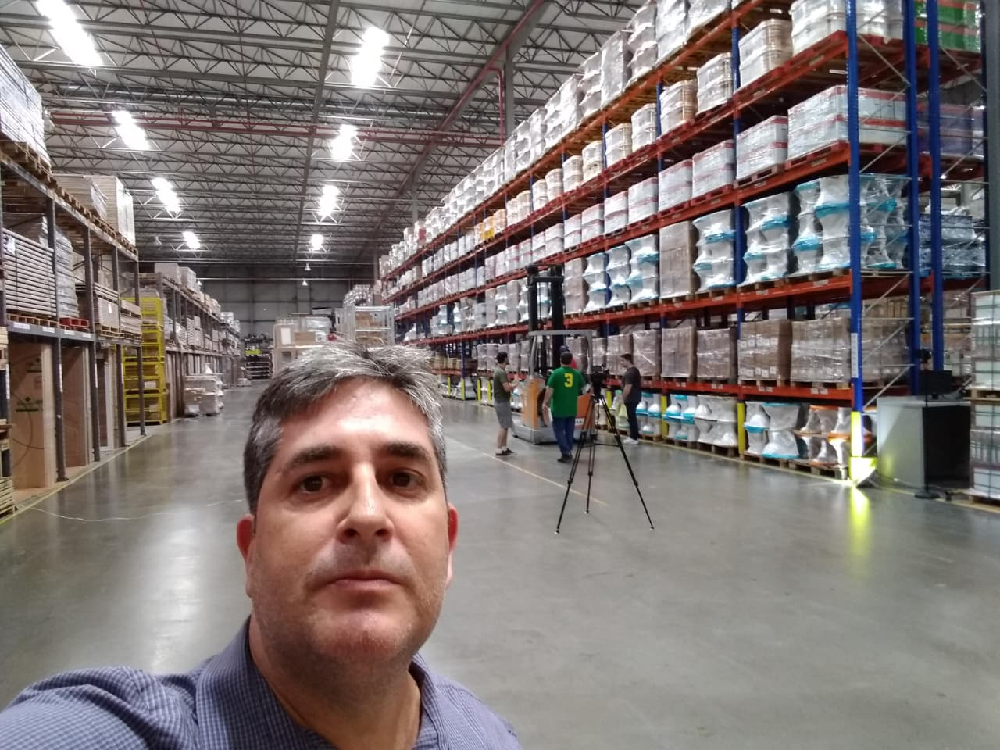
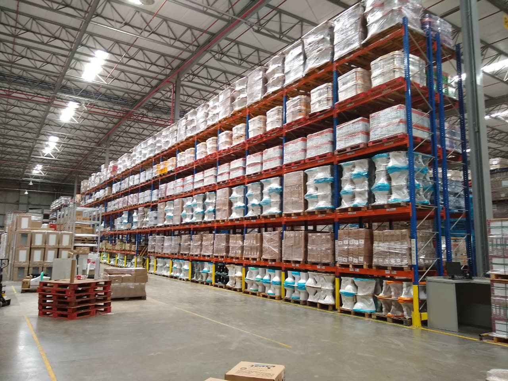

Consultor Sênior de Logística & Fundador da JGM4
Formado na prática — de operador a gestor estratégico em grandes operações.
Bruno Muniz é consultor sênior de logística com mais de 20 anos de carreira construída dentro de operações reais — indústria, varejo, atacarejo e e-commerce. Atuou como Gestor Sênior de Logística em empresas de grande porte, liderando a estruturação e transformação de centros de distribuição de alta performance.
Sua trajetória inclui passagens por Ramada Atacadista, Grupo LLE, Fabrimar e Fornecedora Chatuba — nomes relevantes do varejo, atacarejo e indústria brasileira. Em cada uma, liderou projetos de reengenharia de processos, implantação de WMS e ERP, estruturação de KPIs e redução de custos operacionais.
No varejo e atacarejo, Bruno desenvolveu expertise em operações de alto volume, gestão de grandes equipes, disciplina de inventário e integração tecnológica — habilidades que hoje aplica diretamente nos projetos da JGM4.
A JGM4 Consultoria nasceu dessa experiência acumulada: para levar método e execução real a pequenas e médias empresas que precisam de resultado, não de relatório.
Fotos de alguns trabalhos
Imagens de intervenções, projetos e resultados em operações.




Experiência construída nas maiores operações
Varejo, atacarejo, indústria e e-commerce — experiência real em ambientes de alta complexidade.
Consultoria especializada em centros de distribuição, gestão de estoques, WMS, supply chain e melhoria de processos. Atendimento a PMEs com diagnóstico, plano de ação e acompanhamento de execução.
Gestão logística em operação de atacarejo de alto volume. Estruturação de processos de CD, controle de estoques, gestão de transportes e implantação de indicadores de performance (KPIs, OTIF, acuracidade).
Operações logísticas em rede de varejo de materiais de construção. Gestão de armazém, controle de estoque, reengenharia de processos operacionais e integração de sistemas ERP/WMS.
Coordenação de centro de distribuição, gestão de equipes operacionais, controle de estoque e armazenagem, implantação de rotinas de inventário e governança logística.
Gestão logística em ambiente industrial (torneiras e metais sanitários). Armazenagem, almoxarifado, gestão de materiais, planejamento de suprimentos e controle de estoque de insumos e produto acabado.
Conhecimento técnico aplicado à operação
Domínio das principais tecnologias e sistemas da logística moderna.
O que sustenta a entrega da JGM4
Clareza, método e acompanhamento real — sem teoria vazia.
Experiência de chão de fábrica
Recomendações baseadas em operação real — não em teoria. Cada entrega parte de vivência em CDs de alto volume.
Foco em resultado mensurável
KPIs simples e metas governáveis: produtividade, acuracidade, custo por pedido e nível de serviço.
Domínio tecnológico
Conhecimento prático em WMS, SAP MM, ERP e dashboards — integração de tecnologia com a realidade operacional.
Expertise em varejo e indústria
Passagem pelas maiores operações de varejo, atacarejo e indústria do Brasil — com compreensão das dinâmicas de cada segmento.
Parceria na execução
Acompanhamos o plano, treinamos a equipe e ajustamos o modelo. O objetivo é mudança real, não apresentação.
Diagnóstico antes de prescrição
Mapeamos processos, indicadores, layout e sistemas antes de qualquer recomendação. Solução sob medida para a sua realidade.
Dúvidas frequentes
Respostas claras para você tomar a melhor decisão.
Quais tipos de empresa a JGM4 atende?
Atendemos principalmente PMEs com operação de estoque, CD, expedição e transportes — indústria, varejo e e-commerce. O foco é reduzir gargalos e aumentar previsibilidade operacional.
Bruno Muniz tem experiência em varejo e atacarejo?
Sim. Bruno passou por Ramada Atacadista e Fornecedora Chatuba — dois ambientes de alto volume, com grande complexidade de gestão de estoque, giro de produtos e fluxo de transportes. Essa vivência é diretamente aplicada nos projetos de consultoria.
A consultoria ajuda na implantação de WMS e ERP?
Sim. Bruno tem experiência prática em implantação e gestão de WMS e SAP MM. A JGM4 atua na parte operacional e de processos: parametrização, rotinas, disciplina de apontamento, inventários, endereçamento e integração com a operação real.
Como funciona o diagnóstico logístico?
Mapeamos processos, indicadores, layout, sistemas e rotinas. Entregamos um plano com prioridades, impacto estimado e sequência de implementação — quick wins + melhorias estruturais.
Em quanto tempo consigo ver resultado?
Normalmente há ganhos rápidos em 2 a 4 semanas (padronização, rotinas e indicadores) e resultados mais robustos em 60 a 90 dias (execução completa do plano).
Vocês trabalham com KPIs e metas de produtividade?
Sim. Estruturamos KPIs simples e auditáveis (produtividade, qualidade, acuracidade, SLA, custo por pedido) e desenhamos metas com governança e rituais de gestão.
Como posso ver mais sobre a experiência do Bruno?
Acesse o perfil do LinkedIn: linkedin.com/in/brunomuniz72. Lá você encontra a trajetória completa, publicações, artigos sobre logística e recomendações de profissionais do setor.
Pronto para transformar sua operação logística?
Agende uma entrevista inicial e descubra se faz sentido avançar para um diagnóstico técnico pago da operação.